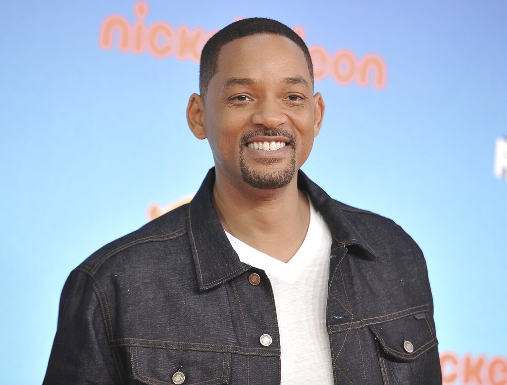

Will Smith has been nominated for five Golden
Globe Awards and has won four Grammy Awards.
- 1968 - Born in Philadelphia, Pennsylvania, U.S.
- Late of 1980s - He achieved modest fame as a rapper
under the name The Fresh Prince.
- 1990 - His popularity increased dramatically when he
began starring in the NBC television series The Fresh Prince of Bel-Air,
which ran for six seasons until 1996.
- 1995 - the action film Bad Boys,he starred opposite Martin Lawrence,The latter film was commercially successful, grossing $141,407,024 worldwide – $65,807,024 in North America and $75,600,000 overseas.
- 1996 - Smith starred as part of an ensemble cast in Roland Emmerich's Independence Day. The film was a massive blockbuster, becoming the second highest-grossing film in history at the time and establishing Smith as a prime box office draw.
- 1997 - In the summer, he starred alongside Tommy Lee Jones in the hit Men in Black, playing Agent J.
- 2001 - For his performances as boxer Muhammad Ali in Ali, Smith received Academy Award nominations for Best Actor.
- 2002 - following a four-year musical hiatus, Smith returned with his third album Born to Reign, which reached number 13 on the Billboard 200 and was certified gold by the RIAA.
- 2006 - For his perfomance as a stockbroker Chris Gardner in The Pursuit of Happyness, Smith received Academy Award nominations for Best Actor.
- 2007 - In April, Newsweek called him "the most powerful actor in Hollywood" , in the same Year Smith Starred in the filme I Am Legend.
- 2014 - 17 of the 21 films in which he has had leading roles have accumulated worldwide gross earnings of over $100 million each, with five taking in over $500 million each in global box office receipts.
- 2016 - his films have grossed $7.5 billion at the global box office.